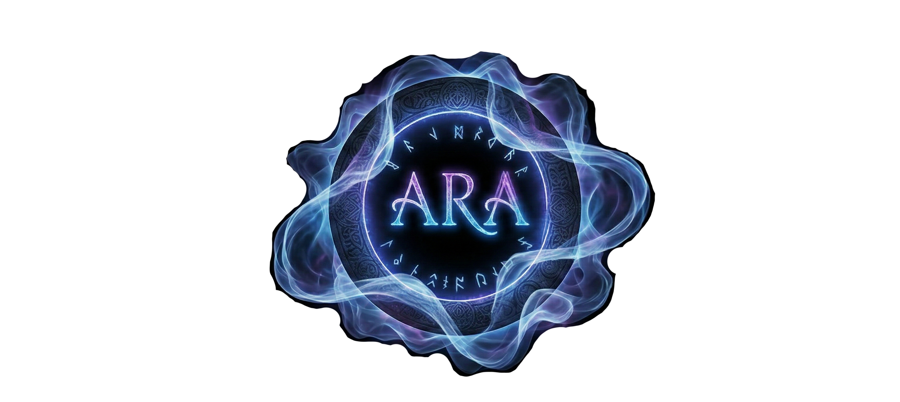

ARATHION
Das Echo von Olyndra
Ein offenes Fenster für alle, die in ihren alten Welten nichts mehr zu verlieren haben.
ARATHION
Das Echo von Olyndra
Du bist im Staub eines ungezähmten Landes gelandet. Der Blick zurück zeigt nur den flimmernden Riss. Unerreichbar und ohne Weg zurück. Hier zeigt sich, wer die Kraft hat, aus dem Nichts eine Existenz zu formen.
Dein deutscher Conan Exiles RP Server mit Voice-Pflicht
Arathion ist ein ambitioniertes Conan Voice RP Projekt im Dark Fantasy Setting. Wenn du nach einem Conan RP Server (Deutsch) suchst, der Wert auf tiefgründiges Roleplay, ein faires Wirtschaftssystem und Voice-Kommunikation legt, bist du hier richtig. Erlebe echtes Voice Roleplay in Conan Exiles – schreibe deine eigene Geschichte in Olyndra!
Stimme der Welt
Das gesprochene Wort ist Gesetz. Deine Stimme formt das Schicksal im Staub von Olyndra.
Nichts zu verlieren
Der Schritt durch den Riss ist kein Zufall, sondern ein Akt des freien Willens. Lass die alte Welt brennen und baue neu auf.
Staub & Überleben
Keine Taverne empfängt dich, kein Heiler eilt herbei. Nur Bestien und Misstrauen. Du bist dein eigener Herr, und dein eigener Untergang.
Das Echo von Olyndra
Ein zerrissener Himmel. Eine leere Welt.
Der Riss im Himmel
In der Stille von Olyndra klafft ein Riss im Himmel. Dieser Riss ist das letzte Echo des Zusammenbruchs, der Städte, Häuser und auch Wesen verschlang. Dieses Phänomen ist kein stabiler Durchgang, sondern ein offenes Fenster für alle, die in ihren alten Welten nichts mehr zu verlieren haben. Es ist ein Riss, der nicht heilt, sondern wie eine glühende Wunde über der kargen Landschaft von Olyndra schwebt und alles anzieht, was im Gefüge der Realitäten keinen Platz mehr findet oder finden will.
Der letzte freie Wille
Jeder Wanderer, der heute in Olyndra eintrifft, stand einst auf der anderen Seite. Sie sahen das Flimmern in der Luft, das Flüstern der Energie und spürten etwas, das an ihnen zerrte. Der Schritt durch den Riss ist kein Zufall, sondern der letzte Akt des freien Willens in einer Welt, die ihnen den Rücken gekehrt hat.
Ein Wimpernschlag
Sobald man den Entschluss fasst und den Schleier durchschreitet, gibt es kein Zögern mehr. Die Realität biegt sich, die Farben der alten Welt verblassen zu einem fahlen Grau, und für einen Wimpernschlag existiert man außerhalb von Zeit und Raum. Es ist ein schmerzhafter, reinigender Prozess. Alles, was man war, wird abgestreift. Alles, was man sein wird, liegt auf der anderen Seite.
Im Staub von Olyndra
Wer auf der Seite von Olyndra aus dem Riss tritt, fällt nicht weich. Man landet im Staub eines ungezähmten Landes. Der Blick zurück zeigt nur die flimmernde Spalte am Himmel. Unerreichbar hoch und ohne Weg zurück.
Die Ankömmlinge finden sich in einer Welt wieder, die leer ist. Keine Taverne empfängt sie, kein Heiler eilt herbei. Nur das ferne Gebrüll der wilden Bestien und das Misstrauen derer, die bereits vor ihnen durch den Riss traten, bilden den Empfangsausschuss. Hier zeigt sich, wer die Kraft hat, aus dem Nichts eine Existenz zu formen.
Wer durch den Riss tritt, lässt seine Ketten fallen,
verliert aber auch seinen Schutz.
In Olyndra bist du dein eigener Herr, dein eigener Knecht und... wenn du nicht achtsam bist... dein eigener Untergang. Denn Arathion verzeiht keine Schwäche. Es belohnt den Mut durch den Riss zu gehen.
Blutlinien & Schicksalspfade
Bekannte Völker und ihre Berufung
Völker von Olyndra
Wähle weise, denn dein Blut bestimmt deinen Weg im Staub. Dies sind die Überlieferungen der Wesen, die den Riss durchschritten:
Naturvölker ✤
Berg & Stein ◭
Wilde Völker 🩸
Finsternis & Mystik ☽
Zivilisation & Technik
Die Pfade des Kampfes
Wandler
Wandler sind Meister der Anpassung, deren Körper so wandelbar sind wie die Zeitrisse selbst. Sie können ihre Gestalt in die verschiedensten Kreaturen oder Bestien verändern, um im Kampf an vorderster Front zu bestehen oder lautlos zu spähen. Diese Vielseitigkeit macht sie unberechenbar: Wo eben noch ein Mensch stand, kann im nächsten Moment eine reißende Bestie angreifen. Ihr Weg ist einer der Instinkte und der tiefen Verbundenheit zur inneren Natur.
Rüstung: leichte bis mittlere Rüstung
Kampfart: Nahkampf - Shapeshift
Jäger
Jäger sind die unbestrittenen Meister des Fernkampfs und des Überlebens in der Wildnis. Ob mit dem traditionellen Langbogen oder einer modifizierten Waffe aus einem Zeitriss – sie treffen ihr Ziel mit tödlicher Präzision aus der Distanz. Sie verstehen es, das Gelände zu nutzen, Fallen zu stellen und die Spuren ihrer Feinde zu lesen. Ein Jäger in Arathion ist oft ein einsamer Wolf, der den ersten und letzten Schuss eines Kampfes abgibt.
Rüstung: leichte bis mittlere Rüstung
Kampfart: Fernkampf - mit Begleiter
Assassine
Der Assassine ist die Verkörperung des lautlosen Todes. In den Schatten Arathions zu Hause, nutzen sie Schnelligkeit, Tarnung und Gifte, um ihre Ziele auszuschalten, bevor der Kampf überhaupt begonnen hat. Sie meiden das offene Schlachtfeld und setzen stattdessen auf präzise Stiche in die Schwachstellen ihrer Gegner. Für einen Assassinen ist Ehre zweitrangig – nur das Ergebnis zählt, und das ist meistens ein lautloses Ende im Dunkeln.
Rüstung: leichte bis mittlere Rüstung
Kampfart: Nahkampf - Fernkampf
Magier
Magier sind Gelehrte, die die instabilen Energien der Welt manipulieren. Sie beherrschen sowohl die zerstörerischen Elemente als auch arkane Manipulationen, um das Schlachtfeld zu kontrollieren. Ein Magier kann Feuer regnen lassen oder die Realität krümmen, doch diese Macht ist gefährlich. Wer die arkane Energie nicht mit eisernem Willen führt, läuft Gefahr, von der Magie, die er beschwört, selbst verzehrt zu werden.
Rüstung: leichte Rüstung
Kampfart: Fernkampf - Magie
Krieger
Der Krieger ist das stählerne Rückgrat einer jeden Gruppe. Ob in schwerer Platte mit Schild oder als rücksichtsloser Schadenskämpfer mit zwei Äxten – sie suchen den direkten Kontakt zum Feind. Ein Krieger in Arathion verlässt sich auf jahrelanges Training, pure Kraft und unerschütterlichen Mut. Sie sind es, die den Ansturm abfangen und die Linie halten, wenn alles andere im Chaos der Magie und der Zeitrisse zu versinken droht.
Rüstung: mittlere bis schwere Rüstung
Kampfart: Nahkampf
Vampir
Vampire sind zeitlose Raubtiere, die oft durch uralte Risse nach Arathion gelangten. Sie besitzen übermenschliche Reflexe, enorme Kraft und die Fähigkeit, sich nach Verletzungen rasch zu regenerieren – solange sie ihren Durst nach Lebenskraft stillen. In der Gesellschaft Arathions sind sie oft elegante, aber gefürchtete Außenseiter. Ihr Dasein ist ein ständiger Kampf zwischen ihrer menschlichen Vernunft und dem ewigen Hunger der Nacht.
Rüstung: leichte bis mittlere Rüstung
Kampfart: Nahkampf
Werwesen
Werwesen tragen einen unbändigen Fluch in sich, der sie in hybride Bestien verwandelt. In ihrer verwandelten Form sind sie eine Urgewalt aus Muskeln, Krallen und Zähnen, die kaum aufzuhalten ist. Sie zeichnen sich durch extreme Widerstandskraft und animalische Wildheit aus. Während sie in Menschengestalt oft ruhig wirken, brodelt unter der Oberfläche stets der Instinkt der Jagd, der nur darauf wartet, im Kampf entfesselt zu werden.
Rüstung: leichte bis mittlere Rüstung
Kampfart: Nahkampf - Werwolfwandlung über Indrids
Handwerk (Berufe)
In Olyndra haben Handwerk und Spezialisierung überlebt.
Das Fundament (Hauptberufe)
Der Waffenschmied
Erschafft Waffen und essentielle Werkzeuge für alle Überlebenden. Ohne ihn ist das Überleben im Staub unmöglich.
Der Rüstschmied
Schützt das Fleisch. Er stellt von leichten Stoffen bis zu schweren Platten alles her und prägt das Erscheinungsbild der Krieger.
Der Juwelier
Schleift Edelsteine für Fokus-Magie, verzauberte Ringe und fertigt Schmuckstücke, die an vergangene Zivilisationen erinnern.
Der Bogner
Die Distanz entscheidet oft über Leben und Tod. Er fertigt Bögen, Büchsen und jegliche Munition.
Der Alchemist
Braut Essenzen, Gifte und heilende Tränke. Seine Substanzen sind die Grundlage für viele Forschungen und Taktiken im Kampf.
Die Versorgung (Nebenberufe)
Sklavenhändler
Vermittelt Arbeitskräfte, Kämpfer und Tänzer. Im gnadenlosen Olyndra ein brutales, aber lukratives Geschäft.
Gärtner
Kennt die wenigen Pflanzen, die in der Asche gedeihen, und versorgt die Alchemisten mit Kräutern.
Händler
Sucht und tauscht Güter über den Großmarkt. Er beschafft das Unmögliche für jene, die zahlen können.
Koch
Sorgt für die körperliche Stärkung durch Rationen und Festmähler, unverzichtbar vor Expeditionen.
Tierbändiger
Unterwirft die wilden Bestien von Arathion. Pflegt und züchtet treue Begleiter für den Kampf.
Das Rollenspiel (Sonderberufe)
Diese Berufungen leben rein durch Erzählung und Interaktion, weitgehend losgelöst von Engine-Mechaniken.
Der Pfad des Heilers
Der Heiler nimmt eine absolute Sonderrolle ein und ist enorm wichtig für das Überleben nach schweren Wunden (Knock-System). Daher kann der Weg des Heilers zusätzlich zu jedem anderen Beruf erlernt werden.
Die Lehren der Wandler
Bekannte Manifestationen
Der Pfad des Wandlers erlaubt das Annehmen der verschiedensten Kreaturenformen. Dies ist ein Auszug der Formen, deren Essenz bisher verstanden und gebändigt wurde:
Verblasste Visionen
Bilder aus dem Staub von Olyndra
Eherne Gesetze
#1 - Allgemeines
#1 - Allgemeines
Server Daten
Name: Arathion S-III - [GER] Conan Voice RP
IP: 178.63.47.190:7777
Grundsatz
- Die obersten Regeln sind natürlich “Sei kein Idiot” & “Schütze dein Leben”
- IC und OOC sind strikt zu trennen!
- Unwissenheit schützt vor Strafe nicht. Lieber einmal zu viel als einmal zu wenig gefragt.
- Alles, was im RP passiert, sollte sinnig für das RP sein.
- Handlungen können Konsequenzen mit sich bringen, welche auch auszuspielen sind!
Ticketübersicht
- Support: Technische Fragen/Probleme
- Live Action Reaktion: Tickets, die eine schnelle Reaktion im RP benötigen
- Admin: Nur für Admin-Themen
Ethische Regeln
Vergesst bitte niemals, dass euch gegenüber immer ein Mensch sitzt. Wir erwarten ein respektvolles, freundliches und erwachsenes Miteinander und bitten alle bei künftigen Gesprächen immer einen angemessenen Umgangston zu halten.
Das Beleidigen, Beschimpfen, Bedrängen und/oder eine andere Form von Mobbing bezüglich Community Mitgliedern, dem Team oder Dritten ist strikt untersagt. Dies gilt auch für Hetze jeglicher Art. Sollte einer dieser Fälle in irgendeiner Form auftreten, so ist dies dem Team umgehend zu melden. Je nach Schwere des Vergehens hält sich das Team das Recht vor, entsprechende Maßnahmen einzuleiten und durchzusetzen. Die Darstellung von kinderpornographischen und rechtsradikalen Inhalten ist in jeglicher Hinsicht verboten. Bei Zuwiderhandlung erfolgt ein permanenter Ausschluss vom Serverprojekt und wird vom Team zur Anzeige gebracht.
Rp-Server
Wir stellen das RP in den Fokus und das spiegelt sich auch in den Servereinstellungen wider.
Alte-Freunde-Regel
Bei uns ist es möglich, andere Charaktere in die Story mit hineinzuschreiben. Jedoch müssen die Namen bereits bei der Einreichung in der Story des Nachzüglers hinterlegt sein.
Voice RP
Unser Server legt den Fokus klar auf Voice-RP, um ein intensives und immersives Spielerlebnis zu schaffen. Dennoch gibt es Situationen und Ausnahmen, in denen es sinnvoll oder notwendig sein kann, vorübergehend auf Schreib-RP umzusteigen. Beispiele hierfür sind:
- Mehrere Gespräche gleichzeitig: Wenn viele Spieler in einer Szene interagieren (z. B. 10 Personen in 5 Gesprächen), kann Schreib-RP helfen, Ordnung und Übersicht zu bewahren.
- Emotionale Ausnahmesituationen: Wenn es euch aufgrund eurer Rolle oder eurer realen Verfassung schwerfällt, eure Emotionen stimmlich auszudrücken.
- Technische oder persönliche Einschränkungen: Etwa wenn ihr euch in einer Situation befindet, in der ihr vorübergehend nicht sprechen könnt.
Bitte nutzt diese Möglichkeit verantwortungsvoll und stellt sicher, dass Schreib-RP immer klar verständlich und gut lesbar bleibt, um die Immersion und den Spielfluss nicht zu beeinträchtigen.
Abwesenheitsregel
[Wer ohne triftige Abmeldung länger als 14 Tage inaktiv ist, verliert seine Whitelist. Als Inaktivität gilt dabei nicht nur das vollständige Fernbleiben vom Server, sondern auch das bloße Einloggen ohne aktive Teilnahme am RP.] ← ist aktuell ausgesetzt.
Wir bitten euch dennoch darum, solltet ihr den Spaß verlieren, gerade anders beschäftigt sein oder sonstige Gründe haben einmal im Ticket Bescheid zu geben. Niemand von uns ist gerne im Ungewissen.
Schlusswort
Die Teilnahme am Spielbetrieb ist nur mit Vollendung des 18. Lebensjahres erlaubt. Das Spiel Conan Exiles unterliegt der Einstufung USK 18. Der dazugehörende Discordserver verlangt ebenso das Mindestalter von 18 Jahren.
Mit eurer Anmeldung stimmt ihr zu, dass die uneingeschränkten und zeitlich unbefristeten Nutzungsrechte, sämtlicher von euch im Rahmen der Plattform oder des Servers generierten Inhalte, unentgeltlich und exklusiv an die Serverleitung übergehen. Das bedeutet, dass man ebenso akzeptiert, dass Streamer / Video Creator Aufnahmen live / sowie als abrufbaren Inhalt (VOD) über eine Plattform wie Youtube, Twitch oder ähnliches zur Verfügung stellen können und man keine Ansprüche bezüglich persönlicher Inhalte geltend machen darf.
Hinweis: Das Regelwerk kann sich je nach RP-Entwicklung und Server interner Situation jederzeit ändern. Das Team behält sich vor, Regeln anzupassen, zu ergänzen oder auszusetzen, wenn es der Verlauf des Spiels erfordert.
#2 - Bauregeln
#2 - Bauregeln
Clans
maximale Mitglieder → 40 Personen
Bauregeln
- Bauort muss über ein Supportticket gemeldet werden
- Maximale Dekorationen pro Person → 250 Dekoteile
- Rüstungspuppen pro Person → 2 Stück
- Maximale Pflanztröge pro Clan → 4 Stück
- Maximale Strukturen pro Clan pro Kachel → 3000 Bauteile
- Maximale Dekorationen pro Clan pro Kachel → 1000 Deko Teile
- Glockentiere pro Spieler → 1 Tier
- Conan Haustier (Cat) pro Spieler → 1 Tier
Abweichungen können im Ticket angefragt werden! Es muss damit gerechnet werden, dass sie abgelehnt werden, selbst wenn der Grund gut und solide ist!
Werkbänke
Das Anpassen der Größe der Werkbänke ist im RP-lichen Rahmen gestattet. Kleine und große Charaktere dürfen die jeweilige Werkbank anpassen, um RPlich angenehm an ihnen arbeiten zu können. Das größer und kleiner Ziehen der Werkbänke um Platz zu sparen oder zu füllen, ist nicht gestattet.
Für Clans gilt:
Maximal 2 Werkbänke gleicher Art und Nutzung pro Clan.
Maximal 2 Öfen pro Clan
Lagerräume
Jede Siedlung, unabhängig der Bewohner, kann einen “externen” Lagerraum anfragen, um die Materialien außerhalb zu lagern und somit die Performance zu schonen. Jedoch sind diese Lagerräume nur für die jeweilige Siedlung und somit ist RP darin und es als AFK-Fläche zu nutzen, verboten.
#3 - Begleiter und Thralls
#3 - Begleiter und Thralls
Begleiter
- Pro Person sind 2 Reittiere gestattet.
- Pro Person sind 4 Tiere gestattet
- Pro Person sind 6 Thralls gestattet
- Max Tiere pro Clan 20
- Max Thralls pro Clan 30
- Speziell erhaltene Tiere werden nicht gewertet
- Tierzüchter bekommen pro Clan 5 extra Tiere
- Sklavenhändler bekommen pro Clan 5 Thralls
- Achtung: Bedenkt, jeder Thrall braucht ein Bett!
- Pro Person 2 Golems (4 Pro Clan)
- Pro Clan 2 Farm Golems
Thralls
- Magischen Thralls dürfen die Plaketten nicht entnommen werden [Auch nicht bei Tod]! Die Plaketten dürfen auch nicht anderen Thralls gegeben werden! Werkbank-Thralls zählen ins Limit mit rein!
- Die Nutzung von AoC Thralls ist auf unserem Server nur nach vorheriger Absprache mit dem Team gestattet.
- Vor der Verwendung muss ein Support- oder Story-Ticket eröffnet werden.
- Auch wenn die Thralls über den Barmann anzuheuern sind, gilt: Ohne Genehmigung ist ihr Einsatz nicht erlaubt!
- AoC Thralls werden bewusst vom Team vergeben, da sie starke und besondere Begleiter darstellen. Ihr Einsatz soll etwas Besonderes bleiben.
#4 - RP-Regeln
#4 - RP-Regeln
RP Regeln
- PvP ist mit RP Hintergrund erlaubt.
- Angriffe auf Thralls und Pets gelten auch zum PvP!
- Zeitgemäße Sprache (kein Digga)
- Diebstahl ist erlaubt, aber nur in realistischen Mengen. Ausgenommen sind Magie und Plot Gegenstände, bei diesen ist der Diebstahl komplett untersagt. Es ist auch ein POI zu hinterlassen, der eine Spur hinterlässt! Dazu sollte ein Ticket geöffnet werden, Support oder Admin!
- Wenn das Clanwappen einmal gewählt wurde, ist es nur mit Zustimmung des Teams zu ändern. Mehrfache Nutzung des selben Symbols muss IC geregelt werden.
- Jeder muss das Geschlecht bespielen, mit dem er/sie sich OOC identifiziert.
- IC wird nicht OOC gesprochen.
- Flugregel: Man kann niemanden im Flug tragen, man kann nicht kämpfen oder Magie wirken beim Fliegen
- Dinge wie Meta / RDM / Power RP / Fail RP / Stream Sniping / Backseat Gaming, sind verboten. (Unten die Begriffserklärung)
- Ausgeloggte Spieler sowie AFK-Spieler dürfen nicht ausgeraubt, missbraucht oder getötet werden.
- Das Verwenden von Glitches und Bugs ist strikt verboten. (Bsp.: Kisten, Bomben oder Sklavenräder zum Teil in Felsen/Map Untergrund verstecken etc.)
- Maskierte Spieler dürfen nicht anhand der Stimme erkannt werden. Es müssen tatkräftige Beweise vorliegen. Erst dann darf eine Maskierung entlarvt werden. Bsp. für Beweise: Tattoos, Narben, besondere Merkmale, Kleidung, die der Spieler den ganzen Tag trug. (Rassenmerkmale wie Ohren, Hörner etc. zählen nicht als stichhaltiger Beweis).
- Voicechanger sind ohne Genehmigung vom Team verboten.
- Sex- oder Anstößiges-RP ist nur in den Stundenzimmern des Bordells oder in Privatgemächern erlaubt.
- Sex- und/oder Anstößiges-RP ist nur im gegenseitigen Einverständnis erlaubt.
- Das Streamen auf unserem Server benötigt keine gesonderte Erlaubnis (ausgenommen Team-Räumen, Support-Räumen, allgemein im DC). Es ist im Stream Titel zu vermerken, dass ihr auf unserem Server spielt. Im Support könnt ihr euch die Streamer-Rolle und unser Emblem geben lassen.
- Jeder, der auf unserem Discord und/oder auf dem Server ist, hat sich dazu bereit erklärt, unwiderruflich in Streams und Videos aufgenommen zu werden (Char + Stimme).
- Rückerstattungen von Dingen bekommt man nur mit Beweis, sei es Video, Bilder oder auch Logs, bitte bedenkt, dass nicht jeder immer ehrlich ist und daher eine Kontrolle sein muss.
Magische Waffen
Magische Waffen mit sichtbaren magischen Effekten dürfen nur von Charakteren benutzt werden, die über die nötige magische Fähigkeit oder Klasse verfügen, um die Magie zu kontrollieren. Charaktere ohne Magie können solche Waffen nicht einsetzen. Keine Magie? → Keine magische Waffe! Schattenmagie? → rote bis schwarze Effekte, Arkanmagie? → Lila Effekte usw… Nur vom Team ausgegebene Waffen sind gestattet!
Wissenswertes zu den Rassen/Klassen/Fähigkeiten/Charakter
Grundsätzlich solltet ihr wissen, dass es immer realistisch bleiben soll. Es gibt gewisse Fähigkeiten, bei denen es wichtig ist gewisse Dinge zu berücksichtigen:
-
Rassen
Mehrere Gestalten eines Charakters Es ist möglich mehrere Darstellungen zu haben, jedoch ist es auch notwendig, dass diese regelmäßig ausgespielt werden. Werden diese Darstellungen nicht regelmäßig ausgespielt, dann verliert der Charakter die Fähigkeit und behält nur noch seine Ausgangsgestalt (z.B. Dämon: Menschliche und dämonische Gestalt. Es wird aber nur die menschliche Gestalt ausgespielt, dann verliert der Charakter die dämonische Form)
Verschiedene Größen der Rassen Mindestgröße: 100
Maximalgröße: 240 -
Fähigkeiten
Stealth-Fähigkeit: Auch wenn euch die Gegner ab dem Zeitpunkt des Duckens nicht mehr wahrnehmen, lauft dennoch so, dass ihr nicht gesehen werden könnt. Das bedeutet, nicht direkt auf den Füßen eines Gegners und auch nicht mittendurch. Diese Fähigkeit ist dafür da, um sich unbemerkt zu bewegen, also macht das auch. -
Charaktere
Charakterboni (Indrid’s) Jeder Charakter hat bestimmte Fähigkeiten. Jedoch legen wir Wert darauf, dass das Gleichgewicht gewahrt bleibt. -
Magie
Magie wird in die Grundelemente unterteilt. Feuer, Wasser, Luft, Erde. Diese bilden sich schließlich weiter: Licht, Schatten, Arkan, Seele. Weder Blutmagie noch heilige oder unheilige Magie ist im RP zu erwähnen! Grundsätzlich ist jeder dazu in der Lage sich eine Magie anzueignen und voranzutreiben, lediglich die Magier können nach und nach mehr als eine Magieart erlernen.
#5 - Verbotenes
#5 - Verbotenes
Missbrauch der Flugfähigkeit
Das absichtliche Nutzen von Flugfähigkeiten zur Flucht aus begonnenem PvP- oder PvE-Kampf ist strengstens untersagt. Fliegen ist ein gestalterisches Privileg bestimmter Rassen und dient der atmosphärischen Darstellung, nicht dem unfairen Vorteil im Kampf. Zuwiderhandlungen führen zum dauerhaften Verlust der Flugfähigkeit.
Es gilt hier allgemein, dass das Ausnutzen der Engine im Kampf jeglicher Art verboten ist! Fliegen, Wasser, Hochklettern im PvE, um vom Felsen zu schießen etc…
Verbotene Gegenstände
Nutzen, Herstellen oder Behalten ist komplett untersagt und komplett Teamgesteuert:
- Flask of Repair
- Trank des Tierinstinkts
- Perk "Lastentier" wird verboten!
Generell verbotenes
- Das Bauen von Altären zur Magie Herstellung ist den Magiern vorbehalten.
- Die Farmingtools sind nur von Magiern herzustellen und zu nutzen!
- RP-Verweigerung
Achtung: Die Liste wird fortlaufend erweitert.
#6 - Strafen
#6 - Strafen
Altes Wissen
Überlieferungen & Werkzeuge
Begriffserklärung
Begriffserklärung
- OOC: "Out of Character" bedeutet, dass du gerade nicht deinen Charakter im Game bespielst.
- IC: "In Character". IC bedeutet, dass du gerade deinen Roleplay Charakter bespielst.
- Metagaming: das Verwenden von Informationen im Roleplay, die man außerhalb des Roleplays bekommen hat.
- Backseat Gaming: Anderen Spielern OOC sagen, was sie IC mit ihren Charakteren tun sollen.
- Stream Sniping: Informationen, die ihr aus einem Stream bekommt (egal ob Gesprochenes oder der Standort einer Person) die man IC verwendet.
- Fail-RP: unlogisches Roleplay. Dinge, die eine reale Person nicht machen oder sagen würde.
- R-D-M: Random-Death-Match ist das absichtliche Töten von Spielern ohne triftigen Roleplay Hintergrund.
- Power-RP: Roleplay, bei dem einem Gegenüber keine Reaktionsmöglichkeit/Wahl gelassen wird.
Engine, Lichter & Accessoires
Engine, Lichter & Accessoires
Accessoires
Insofern Accessoires über SHIFT + B auszurüsten sind, ist dieses zu nutzen!
Foot Print
Ihr müsst eure Fußabdrücke einstellen und in folgendem Tutorial findet ihr heraus, wie ihr es anpassen und ändern könnt:
- Gehe über Shift+B in deine ToT-Einstellungen und wähle Bodies aus
- Gehe auf den Stift zum bearbeiten bei Current Body
- Öffne den Bereich "Body"
- Wähle dann den Bereich "Footprint" aus und entscheide dich für die passenden Abdrücke: Bare = Barfuß, Generic Shoes = Flache Schuhe, High Heels = mit dünnem Stiletto Absatz, Wide Heel = Mit breitem Absatz. Alles weitere sind tierische Abdrücke die im allgemeinen nicht gebraucht werden, es sei denn, man hat Hufe, Pfoten oder dergleichen
- Nach dem Aussuchen des Abdrucks, oben links auf den Haken gehen für "Apply". Deine Fußabdrücke sind nun richtig eingestellt
ToT! Chat
Frage: Mein Chatfenster bleibt durchsichtig, ich muss mit der Maus reinklicken, auch wenn ich es mit [Enter] geöffnet habe. Wie ändere ich das, dass sich mein Chatfenster richtig öffnet und ich direkt schreiben kann?
Antwort: Begib dich in die Einstellungen, dort findest du unter dem Reiter 'Steuerung' die Kategorie “Kommunikation”. In dieser musst du zwei Tastenbelegungen ändern.
Setze für den Globalchat eine Taste ein, die du niemals benutzt.
Setze für 'Chat Fenster Ein/Ausblenden' die gewünschte [Enter] Taste ein.
Scripted Lights
Jeder kann ab sofort Scripted Lights erstellen. Tagsüber sind diese Lichter aus, in der Nacht an. Dabei zu beachten/Wie Ihr sie platziert:
- Lichtquelle platzieren
- „e“ gedrückt halten und auf scripted light klicken, der Name, den ihr dort dann eintragt, ist Nachtlicht
- Wenn ihr die Lichtquelle verschieben wollt, müsst ihr das Scripted Light zerstören und es danach erneut erstellen
- Alle 5 Minuten gibt es eine Abfrage, ob Abend ist oder Tag
Charakter- und Klassentoken
Mit /char aktualisiert/debuggt ihr euren Charakter.
Sprachen lernen
Sprachen lernen
Ob durch lange Reisen, gelehrte Meister oder tiefe Bande zu einem fremden Volk – wer eine Sprache erlernen will, muss sich ihr mit Hingabe widmen. Nur jene, die Zeit, Mühe und den wahren Willen zur Verständigung aufbringen, werden sich die Worte eines fremden Volkes zu eigen machen können. – der Weg zur Verständigung ist nicht leicht. Doch wer ihn beschreitet gewinnt nicht nur Wissen sondern auch Respekt.
Außerdem noch einmal ein kleiner Hinweis: Vier unserer Sprachen sind keine normalen Sprachen. Diese können weder geschrieben werden, noch sind sie humanoider Natur. Diese zu erlernen ist also anders, als bei den anderen Sprachen. Es könnte leichter sein. Oder aber auch so schwer, dass man sein ganzes Leben dafür benötigt.
- Lupin: Die Sprache der Hundeartigen (Sie bellen, knurren und machen jedwede Laute dieser Art)
- Felorisch: Die Sprache der Katzenartigen (Sie mauzen, schnurren und machen jedwede Laute dieser Art)
- Arakai: Die Sprache der Vögel. (Sie zwitschern und singen ihre eigenen Lieder. Manche krächzen und machen jedwede Laute dieser Art)
- Nymvalisch: Die Sprache der Natur. Kleintiere und Pflanzen. Dies ist eher eine Kommunikation der ganz anderen Art. Wenn andere hinhören, dann hören sie vermutlich eher gar nichts, vielleicht noch die Laute der Kleintiere.
Magie
Magie
Magie wird in die Grundelemente, Feuer, Wasser, Luft und Erde unterteilt. Diese bilden sich schließlich weiter. Licht, Schatten, Arkan und Seele. Dies ist auch als solches auszuspielen. Weder Blutmagie noch heilige oder unheilige Magie ist im RP zu erwähnen.
Kranken RP & Enginetod
Kranken RP & Enginetod
Kranken RP
Es gibt ein Knocksystem. Ja, man kann bis zu 4-mal bewusstlos sein. Darauf folgend stirbt man. Die Knocks setzen sich nicht automatisch zurück. Aus diesem Grund sollte man umgehend einen Heiler aufsuchen! Kranken RP ist also nötig. Wer es allerdings absichtlich auf den Tod hinauslaufen lässt, wird mit einem Malus zu rechnen haben bis hin zum Chartod. Diesen vergeben wir an jede Person einzeln.
Wie wird das dann ausgespielt? Wir nennen euch Beispiele, ihr könnt aber auch andere Dinge in die Schwere einsortieren. Dies dient zu eurer Orientierung:
1x ist sehr leicht verletzt - Du hast also vermutlich Kratzer und blaue Flecken
2x ist leicht verletzt - Prellungen und Schnittwunden
3x ist schon mittelschwer verletzt - Knochenbrüche und tiefere Schnittwunden
4x ist schwer verletzt - Bewusstlosigkeit mit enormen Verletzungen
5x ist Enginetod
Kategorie 3x: Kranken-RP auch noch am Folgetag
Kategorie 4x: Kranken-RP für zwei Folgetage
Solltet ihr schwerere Verletzungen als euren Knock ausspielen, dann bedenkt auch die Konsequenzen und haltet euch an die Folgetage. Spielt ihr zu wenige Knocks aus, dann ist den Heilern gestattet euch zu powern. An dieser Stelle verweisen wir auf die oberste Serverregel. Achtet euer Leben. Denn ja, es hat seinen Wert.
Enginetod
Wer so schwer verletzt wird, dass er in die Bewusstlosigkeit gerät und sogar ins Lazarett getragen werden muss, wird von der Leere korrumpiert, da die Seele schaden erleidet. Das bedeutet, dass der Spieler ein Ticket eröffnen muss und von uns Ängste zugeschrieben bekommt, welche er min. 7 Tage auszuspielen hat. Dies sind Ängste, die nicht zwingend mit dem Charakter zusammenhängen. Hat er normalerweise nur Angst vor Spinnen und Feuer, hat er plötzlich so seltsame Angstzustände in der Stille oder Panik, wenn er eine Waffe in die Hand nehmen soll.
Wiederholungstäter
Fällt dem Team auf, dass dies zu häufig vorkommt, wird der Spieler einen Malus erhalten, bis hin zum endgültigen Entfernen des Charakters. Diesen wieder wegzubekommen, wird dauern. Die Konsequenzen müssen ertragen und behoben werden. Der Spieler muss im RP einen Weg finden dieses Problem zu beheben.
Heilerneuerungen
Heilerneuerungen
Verletzte, die auf dem Boden liegen, können nur von Heilern aufgehoben werden. Personen, die keine Heiler sind, können weiterhin Verletzte aus der Gefahrenzone bringen. Wenn ihr einen Knock kassiert, dann gibt es auch gewisse "Liegezeiten", diese werdet ihr mit der Zeit herausfinden. Ihr benötigt hier also einen Moment Geduld oder einen Heiler in eurer Nähe.
Die Hüfte ist euer Punkt ab dem Gemessen wird (ca. 1 Fundament)
Folgende Befehle für die Heiler:
- - /helfen --> Spieler auswählen --> Es wird euch ein Wort angezeigt, dieses müsst ihr eingeben um der Person aufzuhelfen.
- - /heilen --> Spieler auswählen --> Knock wird heruntergenommen
Hinweis:
- - Wenn es mal nicht geht, weil er den falschen Namen nimmt, einfach einmal weggehen und wieder hin und neu machen oder Reloggen. Bisher hat es immer funktioniert.
- - Es gibt kein Timer mehr für Knocks
- - Jede Heilung wird durch ein Log gesehen
Es gibt ab sofort ein IC-Heilerbuch. Dort notiert ihr das gleiche, was ihr auch zuvor im Discord notiert habt. Das Buch wird mit /HBericht aufgerufen. Bitte schickt einmal einen Emoji eurer Wahl in den Discord-Channel der Heiler welcher für euch dann hinterlegt wird.
Wachstum & Entwicklung
Wachstum & Entwicklung
Charakterentwicklung
Diese geschieht für jeden im eigenen Tempo. Jedoch drosseln wir euch, wenn jemand zu schnell voran schreiten will. Ihr dürft natürlich auch Items usw anfragen und erhaltet diese, nachdem wir das Anliegen geprüft haben. Wir geben hierbei keinen genauen Zeitraum vor, da wir das Gesamtgeschehen des Servers im Auge behalten. Denn du wirst dich auch an der Entwicklung deiner Mitspieler beteiligen. (Hierfür nutzt du das Supportticket)
Training
Solltest du ausspielen, dass dein Charakter trainiert, wird dies im laufenden RP geschehen erforderlich sein. Nein, es reicht nicht aus zu sagen: "Ich bin heute morgen.." Als ich offline war und an meinem Kaffee genippt habe ".. zwei Stunden um den See gerannt." Bemerken wir bei Spielern, dass dies wirklich oft und viel ausgespielt wird, kann dies belohnt werden. Bitte beachte, dass dies kein muss ist! Sollte einige Zeit vergangen sein und du hegst den Wunsch auf Verbesserung, nachdem du wirklich schon viel ausgespielt hast, dann kannst du auch ein Ticket eröffnen und den Stand der Dinge erfragen. (Hierfür nutzt du das Supportticket)
Berufe & Forschungen
Forschungen werden IC ausgespielt. Hierfür ist es erforderlich, dass du dich deinen Mitspielern mitteilst. Selbst wenn niemand deinen Beruf teilt, ist man bei so gut wie jeder Forschung auch auf andere angewiesen. Teile deine Ergebnisse, tausche dich aus, lerne von anderen. Irgendwann eröffnest du ein Ticket und teilst uns deinen Fortschritt mit. Wir schauen, ob du so weit bist oder mehr erforderlich ist. (Kein KI Text, da diese die Erfahrung des RPs nicht generieren können! Du darfst die KI für Korrekturzwecke nutzen.) (Hierfür nutzt du das Supportticket)
Seelen-Inschrift
Verankere deine Existenz im Buch von Olyndra.
>> Das Pergament wurde gesichert <<
Das Erwachen
Die Stimmen
Folge den Echos im Discord, um von den Architekten Zugang zu erhalten.
Den Stimmen folgen →Das Portal
Trage diese Runen in dein Spiel ein, um Olyndra zu betreten.
In den Geist geschrieben
Impressum
Angaben gemäß § 5 DDG (ehemals TMG) / § 18 MStV
Verantwortlich für den Inhalt
Dennis Heitz
Am Ehrenkamp 25
33659 Bielefeld
Deutschland
Kontakt
E-Mail: info@arathion-rp.de
Discord: dennis2608
Projekt-Hinweis
Dies ist ein rein privates, nicht-kommerzielles Fan-Projekt im Rahmen des Spiels "Conan Exiles". Wir verfolgen keinerlei finanzielle Interessen. Alle Einnahmen (falls zutreffend über freiwillige Spenden) fließen zu 100% in die Erhaltung und Deckung der Serverkosten.
Haftung für Links
Unser Angebot enthält Links zu externen Websites Dritter, auf deren Inhalte wir keinen Einfluss haben. Deshalb können wir für diese fremden Inhalte auch keine Gewähr übernehmen. Für die Inhalte der verlinkten Seiten ist stets der jeweilige Anbieter oder Betreiber der Seiten verantwortlich.
Datenschutzerklärung
1. Datenschutz auf einen Blick
Die folgenden Hinweise geben einen einfachen Überblick darüber, was mit Ihren personenbezogenen Daten passiert, wenn Sie diese Website besuchen. Personenbezogene Daten sind alle Daten, mit denen Sie persönlich identifiziert werden können.
2. Hosting (GitHub Pages)
Wir hosten unsere Website bei GitHub Pages. Anbieter ist die GitHub Inc., 88 Colin P Kelly Jr St, San Francisco, CA 94107, USA.
Wenn Sie unsere Website besuchen, erfasst GitHub verschiedene Logfiles inklusive Ihrer IP-Adressen. Dies geschieht zur Bereitstellung und Sicherung der Website. Die Verwendung von GitHub Pages erfolgt auf Grundlage von Art. 6 Abs. 1 lit. f DSGVO. Wir haben ein berechtigtes Interesse an einer möglichst zuverlässigen Darstellung und Bereitstellung unseres reinen Fan-Projekts.
3. Datenerfassung auf dieser Website
Lokale Speicherung (LocalStorage): Unsere Website nutzt zur Speicherung von einfachen Einstellungen die Technologie des "Local Storage" Ihres Browsers. Hierbei werden lediglich technische Werte (riftProtocolAccepted, hasEnteredRift, visitCount) abgelegt, um Ihre Zustimmung zum Banner zu speichern und das einmalige Portal-Intro ("Riss betreten") sowie eine angepasste Begrüßung zu ermöglichen. Es werden keine Tracking-Mechanismen oder Analyse-Cookies verwendet.
Formular "Charakter-Erstellung": Das auf der Website bereitgestellte Formular zur Charakter-Erstellung ("Seelen-Inschrift") dient ausschließlich dazu, die von Ihnen eingegebenen Texte zu strukturieren und in die lokale Zwischenablage (Clipboard) Ihres eigenen Endgerätes zu kopieren. Es findet keine Datenübertragung an unsere Server oder an Dritte statt. Alle eingegebenen Daten verbleiben bei Ihnen.
4. Plugins und externe Tools
Diese Seite nutzt zur einheitlichen Darstellung von Schriftarten Web Fonts, die von Google bereitgestellt werden, sowie Content Delivery Networks (CDNs) für die Frameworks "Tailwind CSS" und "Lucide Icons". Beim Aufruf der Seite lädt Ihr Browser die benötigten Dateien in Browsercache. Hierdurch erlangen die Anbieter Kenntnis darüber, dass über Ihre IP-Adresse diese Website aufgerufen wurde. Die Nutzung erfolgt im Interesse einer einheitlichen und fehlerfreien Darstellung (Art. 6 Abs. 1 lit. f DSGVO).
5. Externe Links & Plattformen
Unsere Website enthält Links zu externen Websites und Plattformen Dritter (z. B. Steam, Discord). Wenn Sie diese Links anklicken, verlassen Sie unsere Seite. Bei der Nutzung dieser externen Plattformen gelten ausschließlich deren jeweilige Datenschutzbestimmungen. Wir übermitteln von unserer Seite aus keine personenbezogenen Daten an diese Anbieter.
6. Ihre Rechte
Sie haben jederzeit das Recht auf unentgeltliche Auskunft über Ihre gespeicherten personenbezogenen Daten, deren Herkunft und Empfänger und den Zweck der Datenverarbeitung sowie ein Recht auf Berichtigung oder Löschung dieser Daten. Des Weiteren steht Ihnen ein Beschwerderecht bei der zuständigen Aufsichtsbehörde zu.